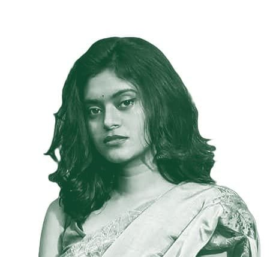
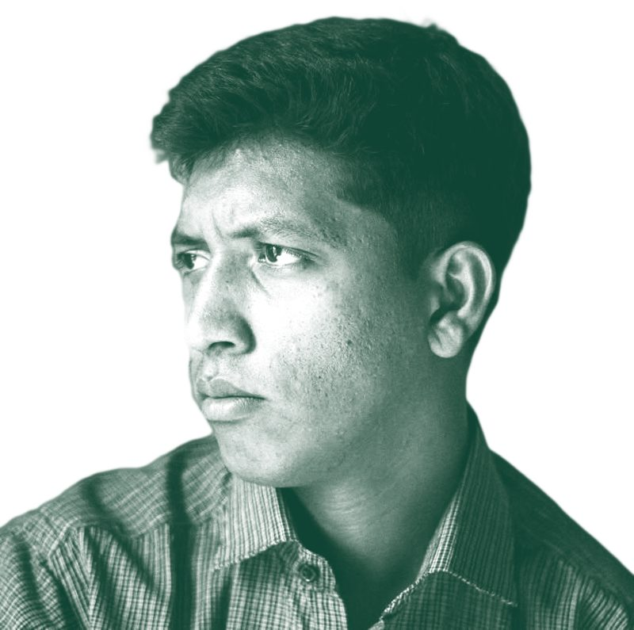

Mission
About Us
Coastal Voices
Climate journalism from the frontlines of Bangladesh's coast
Coastal Voices is dedicated to amplifying the stories of communities living on the frontlines of climate change. Our mission is to shine a light on the challenges these coastal populations face while showing their resilience and adaptability in the face of profound environmental change. By equipping local journalists with the tools, training, and resources they need, we aim to deepen understanding of the issues affecting coastal regions and inspire action at both the local and global levels.
Launched at TechCamp Bangladesh 2024 with support from the U.S. Department of State, Coastal Voices was founded on the belief that those most affected by climate change should have a platform to share their stories and shape the conversation. We seek to close the gap between these communities and global policymakers, so that the voices of coastal populations are heard, understood, and valued in discussions about climate action.
We are committed to combating misinformation, disinformation, and mal-information, particularly around climate change. By prioritizing transparency and credibility in our reporting, we make sure the stories we tell are accurate and reliable, and able to support informed dialogue and collective action.
Our goal is a more informed, engaged, and compassionate global society that is better equipped to face the challenges of climate change. Coastal Voices is more than a platform for storytelling. It is a movement toward a future where the needs, experiences, and solutions of coastal communities are central to climate action.
Vision
A world where frontline coastal stories shape global climate decisions, inspiring informed, just, and sustainable futures.
How We Tell the Story
Coastal Voices
Solutions Journalism
Development Journalism
Advocacy Journalism
Science Journalism
Solutions Journalism
Highlighting innovative responses to climate challenges, and showing how communities adapt and overcome adversity.
Development Journalism
Drawing attention to the social, economic, and environmental impacts of climate change, and encouraging sustainable growth.
Advocacy Journalism
Amplifying the voices of those most affected and pushing for policy changes that address their needs.
Science Journalism
Grounding stories in credible evidence that connects scientific data to the lived experience of coastal people.
Meet
Our Team
Meet the individuals driving Coastal Voices' mission and vision forward.
Core Members
Md. Farhan Sakib Alvi
Project Lead
Expert in development and strategic communication, passionate about empowering coastal communities through media literacy and community-driven initiatives.
Usama Rafid
Content Lead
Media researcher specializing in fact-checking, climate journalism, and digital misinformation, committed to improving the accuracy of environmental reporting.
Anirudha Biswas
Research Lead
Researcher in political communication, with a focus on combating misinformation and advancing media literacy in democratic contexts.
Md. Akil
Operations Lead
Media literacy trainer dedicated to operational coordination, community empowerment, and creatively fighting misinformation at the grassroots level.
Supporting Members
Syed Moula
Graphic Designer
Visual storyteller using design to support media literacy and amplify coastal journalism through creative, accessible communication.

Rehnuma Shahreen
Communications Executive
Supporting member focused on communications, dedicated to amplifying grassroots voices and strengthening community narratives through strategic storytelling.

Abdullah Al Jubayer
Audio-visual Executive
Captures and edits powerful visual stories to amplify coastal voices, focusing on community narratives and climate resilience.
Al Amin
Audio-visual Executive
Captures and edits powerful visual stories to amplify coastal voices, focusing on community narratives and climate resilience.
FAQs
Answers to common questions about Coastal Voices and our mission.
What Is Coastal Voices and What Do We Do?
Coastal Voices is a community-driven media initiative that amplifies the stories of Bangladesh's coastal communities who are vulnerable to climate change. We train and mentor local journalists, publish grassroots stories, and create a platform for underrepresented voices to reach national and global audiences.
Who Can Contribute and Do They Get Paid?
We accept contributions from both program participants and independent storytellers. Contributors in selected programs receive an honorarium along with mentorship. Open submissions are also welcome but unpaid. All accepted stories are published with full credit and editorial support.
Who Owns the Content?
Authors retain credit, and every story is bylined, so your name appears wherever it is published. Coastal Voices holds exclusive publishing rights, so stories cannot be republished elsewhere without written permission.
What Kind of Stories Do We Publish?
We focus on stories about climate change, adaptation, resilience, coastal livelihoods, and community solutions. Submissions can be in Bangla or English and take various formats such as narrative reports, interviews, or visual storytelling.
Who Can I Contact?
For inquiries, reach out through our contact page. Our team can help with questions and collaboration opportunities.
Empowered By
The U.S. Embassy Dhaka and GYLC
This initiative was made possible by funding and strategic support from the U.S. Embassy in Dhaka, Bangladesh and Global Youth Leadership Center.
Learn More